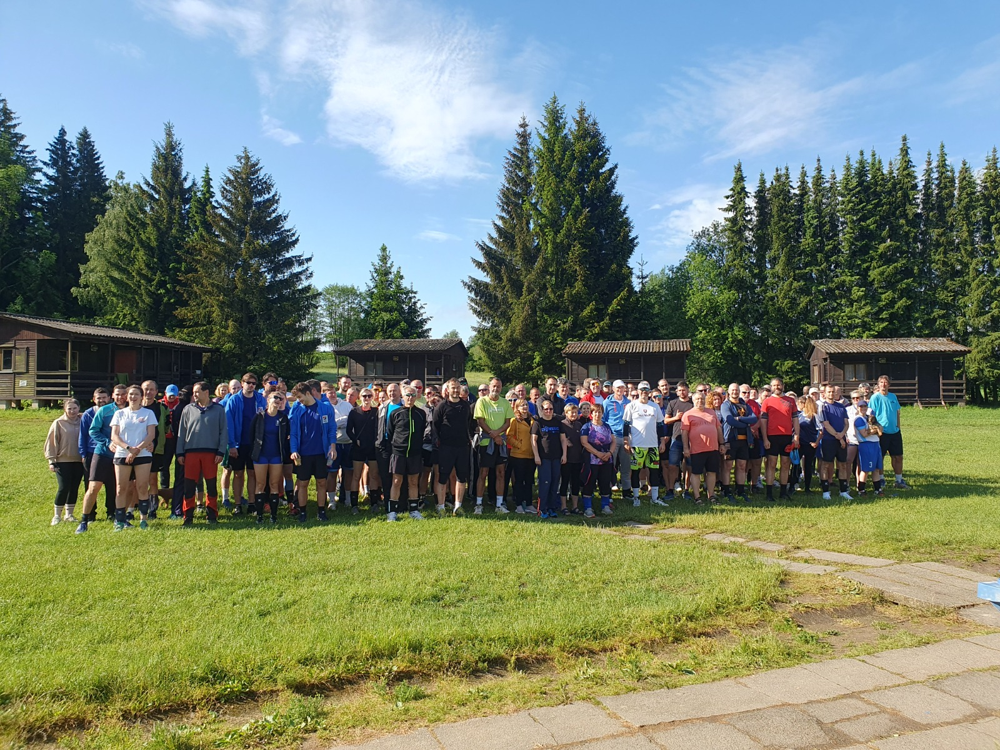
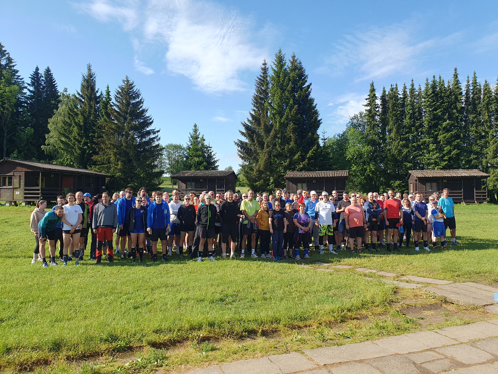
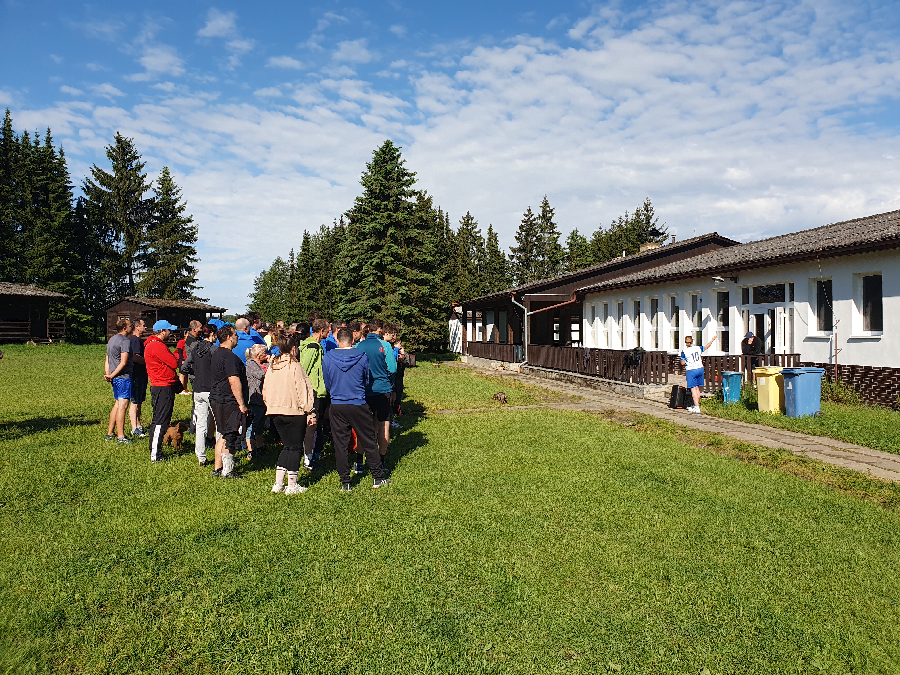
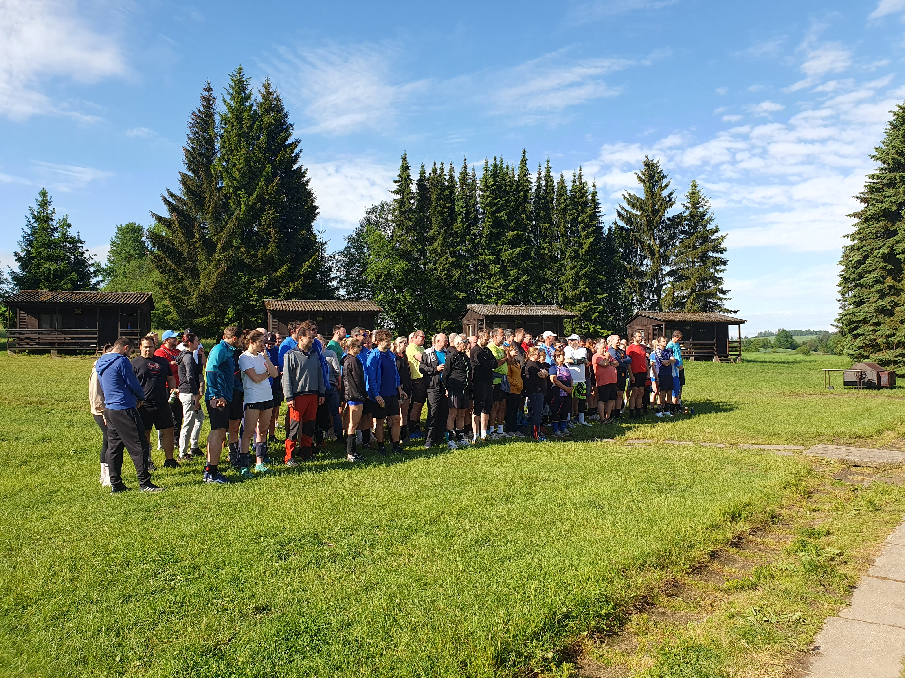
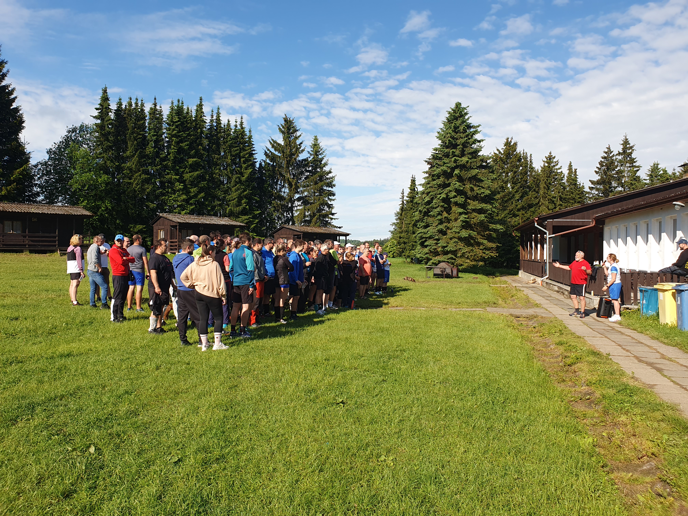
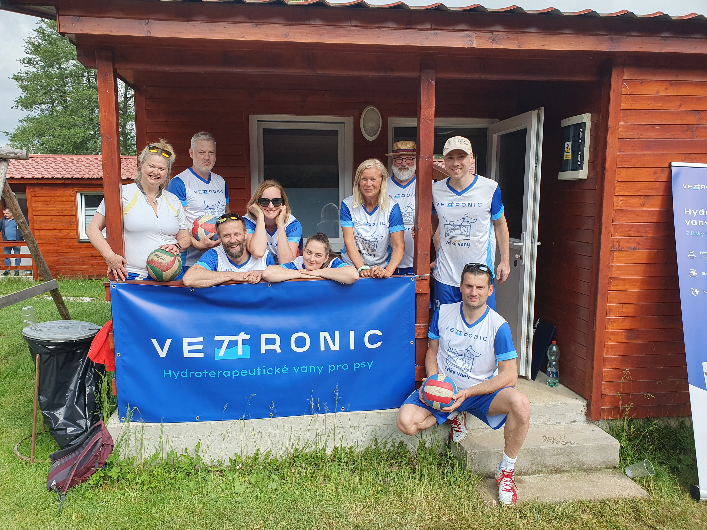
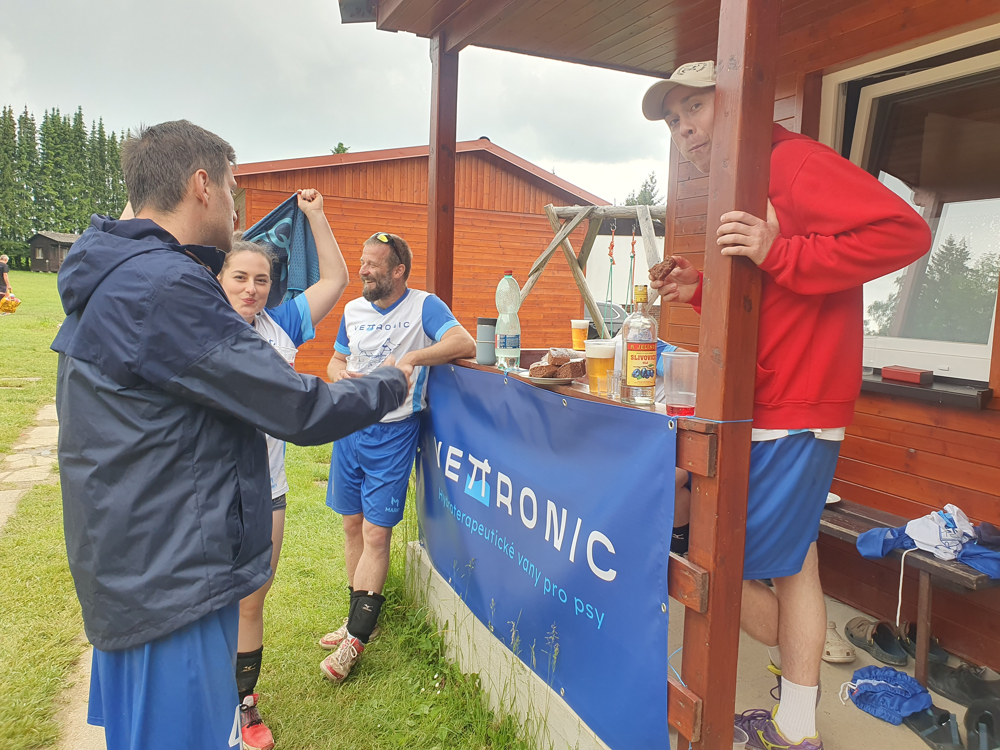
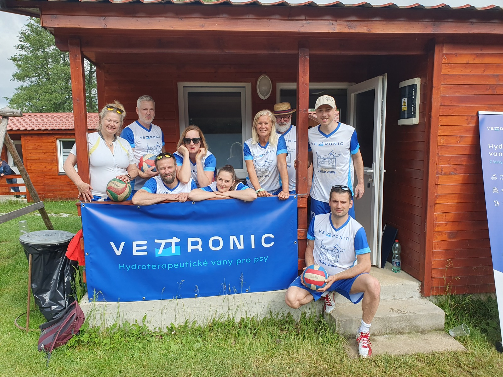

Pátek 28. 5. 2027
- 12:00 – Příjezd organizátorů
- 16:00 – Příjezd účastníků
- 19:00 – 23:00 – Večeře
52. ročník
Tradiční setkání veterinářů, studentů veterinární medicíny a přátel volejbalu.
Veterinární volejbalový turnaj již přes padesát let spojuje veterinární lékaře, studenty a přátele volejbalu. VVT není jen turnaj, jde o víkend plný nezapomenutelné atmosféry, sportovních výkonů a společenských setkání.

Srdečně vás zveme na 52. ročník, který se uskuteční 28.–30. května 2027 v Růžené.
Přihlaste svůj tým do 52. ročníku Veterinárního volejbalového turnaje.
Výsledky budou doplněny po skočení turnaje.
| Pořadí | Tým | Body |
|---|---|---|
| 1. | - | - |
| 2. | - | - |
| 3. | - | - |






Veterinární volejbalový turnaj se uskuteční v rekreačním středisku Růžená, na pomezí Středočeského a Jihočeského kraje přibližně 15km od Milevska.

Ubytování v nově zrekonstruovaných chatkách s šesti lůžky. Každá chatka má své vlastní sociální zařízení (umyvadlo, WC a sprchu).
Parkování pro účastníkyv areálu turnaje.
Děkujeme partnerům a sponzorům za podporu Veterinárního volejbalového turnaje.

tým VETTRONIC
MVDr. Martina Kaufmannová
Hana Grudová